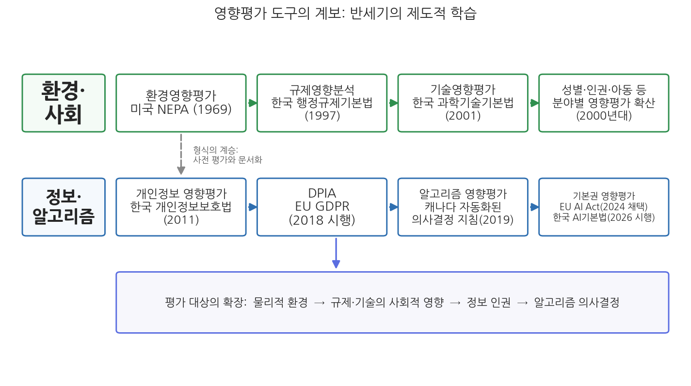
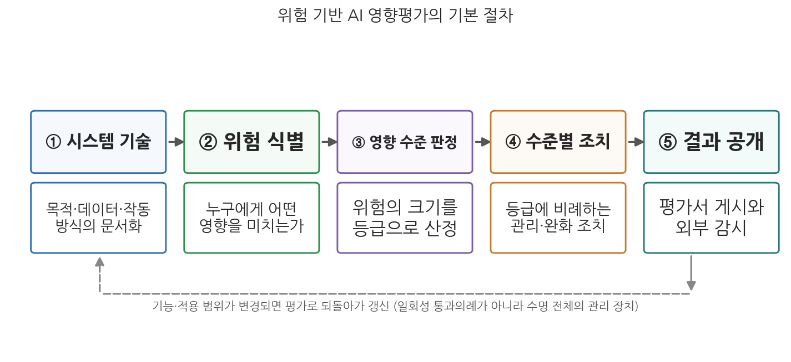

9주차 1차시. AI 영향평가 (1): 왜, 무엇을 평가하는가
연방정부의 모든 기관은 인간 환경의 질에 중대한 영향을 미치는 행위에 관하여, 그 행위의 환경적 영향에 대한 상세한 진술서를 작성하여야 한다. (미국 국가환경정책법(NEPA, 1969) 제102조)
이 장에서 배우는 것
정부가 큰 댐을 짓거나 고속도로를 놓으려면, 착공 전에 그 사업이 환경에 어떤 영향을 미칠지 조사한 평가서를 먼저 내놓아야 한다. 오늘날 당연해 보이는 이 절차는 1969년 미국의 국가환경정책법(NEPA)이 처음 법으로 강제한 것이고, 한국을 포함한 세계 대부분의 나라가 이를 받아들였다. 반세기가 지난 지금, 같은 질문이 콘크리트가 아니라 코드에 던져지고 있다. 정부가 복지 수급 자격을 거르거나 비자 신청을 분류하는 알고리즘을 도입하려 할 때, 그 시스템이 시민의 권리에 어떤 영향을 미칠지 먼저 평가하고 문서로 남겨야 하지 않는가. 2026년 1월부터 시행된 한국의 AI기본법(인공지능 발전과 신뢰 기반 조성 등에 관한 기본법)이 "고영향 인공지능 영향평가"라는 조문을 둔 것도, 캐나다 정부가 자동화된 의사결정 시스템마다 영향평가 결과를 인터넷에 공개하도록 한 것도 이 질문에 대한 제도적 응답이다.
8주차에서 우리는 AI가 정책과정의 집행 단계까지 들어와 자동화된 행정처분에 이르는 모습을 보았다. 그리고 그보다 앞서 3주차의 불투명성, 4주차의 책임 공백, 5주차의 알고리즘 편향에서, AI 시스템이 배포된 뒤에 문제가 드러나면 바로잡기가 얼마나 어려운지도 보았다. 이번 주의 주제인 AI 영향평가(AI impact assessment)는 바로 그 어려움에 대한 응답으로, 문제를 시스템 도입 전에 묻는 도구다. 1차시인 이 장에서는 이 도구가 어디에서 왔고 무엇을 평가하는지를 다루고, 2차시에서 각국의 제도와 실무, 그리고 실효성 논쟁을 다룬다. 구체적으로 다음을 배운다.
- 왜 사후 구제가 아니라 사전 평가인가: 공공부문 AI의 위험 특성
- 영향평가라는 도구의 계보: 환경영향평가에서 개인정보 영향평가를 거쳐 AI 영향평가까지
- AI 영향평가의 개념과 목적, 그리고 기존 영향평가와의 차이
- 무엇을 평가하는가: 핵심 평가 요소와 주요 프레임워크, 위험 기반 접근
이 장은 하나의 질문을 따라 전개된다. "AI가 일으킬 문제를 도입 전에 평가한다는 것은 무엇을, 어떻게 평가한다는 뜻인가?"
1.1 왜 사후 대응이 아니라 사전 평가인지를 따진다 → 1.2 영향평가라는 도구의 50년 계보를 추적한다 (환경 → 규제·기술 → 개인정보 → AI) → 1.3 AI 영향평가의 개념과 목적을 정의한다 → 1.4 무엇을 평가하는지, 평가 항목과 프레임워크를 본다 → 1.5 모든 시스템을 같은 강도로 평가하지 않는 위험 기반 접근을 익힌다.
1.1 왜 '사전에' 평가하는가
공공부문 AI의 위험은 민간보다 크고 다양하다
AI를 통한 혁신과 효율에 대한 기대가 커지는 만큼, AI가 일으키는 부정적 영향과 위험의 발생 가능성도 함께 커지고 있다. 특히 공공부문은 사정이 다르다. 민간 기업의 추천 알고리즘이 틀리면 이용자는 다른 서비스로 옮겨 가면 되지만, 정부의 알고리즘이 틀리면 시민은 다른 정부를 고를 수 없다. 공공부문의 AI는 국민에게 정부 서비스를 제공하고 국민의 권리와 의무에 직접 영향을 미치기 때문에, 민간 서비스보다 위험이 더 크고 더 다양한 방식으로 발생할 수 있다. 복지 급여의 중단, 비자 발급의 거부, 수사 대상의 선별 같은 결정은 한 사람의 삶을 바꾼다.
이 위험에 대응하는 규제적 접근의 대표가 AI 영향평가다. 핵심 발상은 간단하다. AI 시스템이나 서비스를 개발하고 배포하려는 쪽이, 그것이 가져올 잠재적 영향을 배포 전에 미리 따져 보고 문서로 남기게 하는 것이다.
사후 통제가 유난히 어려운 기술
그런데 왜 하필 "사전에"인가. 행정에는 이미 사후 통제 장치가 많다. 감사가 있고, 행정심판과 행정소송이 있고, 국가배상이 있다. 문제가 생기면 그때 바로잡으면 되지 않는가.
AI의 경우 이 사후 장치들이 유난히 잘 작동하지 않는다는 데 문제가 있다. 첫째, 피해가 광범위하게 동시에 발생한다. 데이터 결함이나 알고리즘 편향으로 인한 부정적 효과는 개별 공무원의 실수와 달리 시스템이 처리하는 모든 사건에 한꺼번에 퍼지며, 사후적으로 통제하기 불가능하거나 매우 어렵고, 한번 피해가 발생하면 원상회복이 매우 어렵다(홍석한, 2023). 둘째, 피해가 잘 보이지 않는다. 3주차에서 본 불투명성 때문에, 당사자는 자신이 알고리즘에 의해 불리하게 분류되었다는 사실 자체를 모르는 경우가 많다. 이의를 제기하려면 먼저 알아야 하는데, 알 수가 없는 것이다. 셋째, 규제기관의 전문성에는 한계가 있다. 빠르게 변하는 기술을 규제기관이 일일이 사후 검사하기는 어려우므로, 시스템을 가장 잘 아는 개발자와 도입기관이 스스로 기준에 따라 평가하고 그 내용을 보고하게 함으로써 투명성과 책임성을 확보하자는 것이 영향평가의 논리다.
영국의 기술철학자 데이비드 콜링리지(David Collingridge)는 『기술의 사회적 통제』(1980)에서 기술 통제의 근본적 딜레마를 지적했다. 기술이 초기 단계일 때는 바꾸기 쉽지만 어떤 영향을 미칠지 알기 어렵고, 영향이 분명해질 만큼 기술이 확산된 뒤에는 이미 사회 깊숙이 박혀 바꾸기 어렵다는 것이다. 영향평가는 이 딜레마에 대한 절충적 응답이다. 완전한 예측이 불가능함을 인정하면서도, 도입 시점에 알 수 있는 만큼은 체계적으로 따져 보고, 도입 후에도 평가를 갱신하며 통제 가능성을 유지하려는 시도다. 뒤에서 보겠지만 캐나다의 제도가 시스템 변경 시 재평가를 요구하는 것은 이 딜레마를 의식한 설계다.
정리하면, AI 영향평가는 앞선 주차들에서 본 문제들에 대한 "시점을 앞당긴" 대응이다. 불투명성에는 시스템의 목적과 작동 방식을 도입 전에 문서화하고 공개하는 것으로, 책임 공백에는 누가 무엇을 평가하고 서명했는지를 기록으로 남기는 것으로, 편향에는 배포 전 데이터와 성능의 점검을 요구하는 것으로 대응한다.
1.2 영향평가라는 도구의 계보
행정은 이미 영향평가에 익숙하다
AI 영향평가는 무에서 발명된 도구가 아니다. "새로운 것을 도입하기 전에 그 영향을 체계적으로 평가한다"는 발상은 행정이 반세기 넘게 다듬어 온 오래된 기술이다.
영향평가(impact assessment)는 공공정책이나 사업의 경제적·사회적·환경적 영향을 사전에 분석하는 증거기반 절차다. 법률이나 정책을 개발하는 단계에서 그것이 정책 대상에게 미칠 영향을 분석하여, 목표 달성 가능성을 높이고 예견되는 부정적 영향을 제거함으로써 성공적 집행을 뒷받침하려는 사전예방적 평가를 말한다(신선영, 2022). 요컨대 새로운 기술이나 사업이 도입되는 과정에서 발생할 위험과 부작용을 미리 평가하여 대응과 개선 방안을 강구하는 과정이다(김법연, 2023).
계보의 출발점은 환경이다. 1969년 미국 NEPA가 연방정부 사업에 환경영향평가를 의무화한 이래, 이 도구는 두 방향으로 확산되었다. 하나는 지리적 확산으로, 환경영향평가 제도는 세계 각국으로 퍼졌고 한국도 1977년 환경보전법을 통해 도입한 이래 대형 개발사업의 표준 절차로 자리 잡았다. 다른 하나는 대상의 확산이다. "사업이 환경에 미치는 영향"을 평가할 수 있다면, "규제가 경제에 미치는 영향", "기술이 사회에 미치는 영향", "정보시스템이 사생활에 미치는 영향"도 평가할 수 있지 않겠는가. 실제로 오늘날 한국의 법제만 보아도 규제영향분석(행정규제기본법, 1997), 기술영향평가(과학기술기본법 제14조, 2001), 성별영향평가, 개인정보 영향평가(개인정보보호법 제33조, 2011), 아동정책영향평가, 인권영향평가 등 다양한 영향평가가 운용되고 있다.
1960년대 미국에서는 고속도로와 댐 건설, 산업 개발이 일으킨 환경 파괴에 대한 사회적 우려가 커졌다. 1969년 말 의회를 통과해 1970년 1월 1일 발효된 국가환경정책법(National Environmental Policy Act)은 연방정부의 모든 기관이 "인간 환경의 질에 중대한 영향을 미치는" 행위를 하기 전에 환경영향진술서(EIS)를 작성하도록 의무화했다. 사업 주체가 스스로 영향을 조사해 문서로 남기고, 그 문서가 공개되어 법원과 시민의 심사 대상이 된다는 구조였다. 이 법은 이후 세계 각국 환경영향평가 제도의 원형이 되었고, "중대한 결정 전에 영향을 평가하고 문서화하라"는 형식 자체가 규제, 기술, 개인정보 등 다른 영역으로 이식되었다.
이 사례가 보여 주는 것은 영향평가라는 제도의 원형적 구조다. 첫째, 평가의 주체는 규제기관이 아니라 사업을 하려는 쪽 자신이다. 둘째, 평가의 산출물은 공개된 문서이고, 그 문서가 외부 감시의 발판이 된다. 셋째, 평가는 승인 절차와 연결되어 있어 문서 없이는 다음 단계로 가지 못한다. AI 영향평가를 설계할 때도 이 세 요소, 곧 누가 평가하는가, 결과를 공개하는가, 평가가 실제 결정에 어떤 힘을 갖는가가 반복해서 쟁점이 된다.
개인정보 영향평가: AI 영향평가의 직계 선배
여러 갈래의 영향평가 가운데 AI 영향평가와 가장 가까운 선배는 개인정보 영향평가다. 평가 대상이 물리적 시설이 아니라 정보시스템이고, 보호하려는 것이 자연환경이 아니라 개인의 권리라는 점에서 그렇다.
한국은 2011년 제정된 개인정보보호법 제33조에서 공공기관이 일정 규모 이상의 개인정보파일을 구축·운용하려는 경우 개인정보 영향평가를 받아 그 결과를 개인정보보호위원회에 제출하도록 의무화했다. 시스템 구축 전에 어떤 개인정보를 수집하는지, 유출 위험은 없는지, 침해를 줄일 방안은 무엇인지를 전문기관의 평가로 점검하는 절차다. EU도 2018년 시행된 일반개인정보보호규정(GDPR) 제35조에서, 개인의 권리와 자유에 높은 위험을 초래할 가능성이 있는 처리(특히 프로파일링 등 자동화된 처리에 기반한 체계적 평가)에 대해 데이터보호 영향평가(Data Protection Impact Assessment, DPIA)를 의무화했다. 두 제도 모두 "높은 위험이 예상되는 정보 처리"를 골라내 사전 평가를 요구한다는 점에서 위험 기반 접근을 취한다.
이 사례가 보여 주는 것은 제도적 학습이다. AI 영향평가의 설계자들은 백지에서 출발하지 않았고, 환경영향평가가 만든 "사전 평가와 문서화"의 형식과 개인정보 영향평가가 만든 "정보시스템의 위험 기반 평가"라는 내용을 이어받아 평가 대상을 알고리즘 의사결정으로 넓혔다. 실제로 GDPR의 DPIA는 자동화된 의사결정을 이미 평가 대상에 포함하고 있어서, 유럽에서는 DPIA가 사실상 AI 영향평가의 관문 역할을 해 왔다.
한 가지 이론적 논점을 짚어 두자. 영향평가는 언제 특히 유용한가. 연구자들은 해당 정책의 결과를 예측하기 어렵거나 사회에 미치는 영향을 측정하기 어려운 경우, 또는 담당자와 기술자가 평가할 지식과 전문성은 갖고 있으나 필요한 정보를 스스로 생성할 유인이 충분하지 않은 경우를 꼽는다(김근혜·박규동, 2022). AI는 이 조건에 정확히 들어맞는다. 영향은 예측하기 어렵고, 시스템을 아는 것은 개발자뿐인데, 개발자에게는 위험 정보를 자발적으로 드러낼 유인이 없다. 영향평가는 그 정보를 끌어내는 제도적 장치인 셈이다.

그림 9-1을 읽는 법은 이렇다. 가로축은 시간이고, 각 상자는 영향평가라는 형식이 새로운 대상을 만난 순간들이다. 1969년 미국의 환경영향평가에서 출발한 흐름이 규제(한국 1997)와 기술(한국 2001)로, 다시 개인정보(한국 2011, EU 2018)로 확장되고, 2019년 캐나다의 알고리즘 영향평가와 2024년 채택된 EU AI Act(인공지능법)의 기본권 영향평가, 2026년 시행된 한국 AI기본법의 고영향 AI 영향평가로 이어진다. 이 그림에서 알 수 있는 것은 두 가지다. 첫째, AI 영향평가는 반세기에 걸쳐 검증된 제도 형식의 최신 확장이지 낯선 발명품이 아니다. 둘째, 평가 대상이 물리적 환경에서 사회·경제 영향으로, 다시 정보 인권과 알고리즘 의사결정으로 옮겨 온 궤적은 각 시대가 무엇을 위험으로 여겼는지를 보여 주는 궤적이기도 하다.
1.3 AI 영향평가의 개념과 목적
정의: 알고리즘 책임성 확보의 한 방법
AI 영향평가는 알고리즘 영향평가(algorithmic impact assessment, AIA)라고도 하며, AI가 윤리적이고 합법적으로 사용되도록 초기 단계에서 부정적 문제의 발생을 예방하는 것을 목적으로 하는 사전 평가 절차다. AI 기술을 사용하기 전에 그 사회적 영향을 평가하는 도구로서, AI의 설계와 배포에서 책임 소재를 규정하는 방법인 알고리즘 책임규정 방식(algorithmic accountability approach)의 하나다. 이를 통해 투명성, 책임성, 신뢰를 확보할 수 있을 것으로 기대된다(김동현, 2022).
이 정의에서 두 가지를 눈여겨보자. 첫째, AI 영향평가는 4주차에서 본 책임성 문제와 직결된 도구다. "많은 손"이 얽힌 AI 시스템에서 책임을 묻기 어렵다면, 개발과 도입의 각 단계에서 누가 무엇을 검토하고 확인했는지를 미리 기록하게 함으로써 책임의 지도를 만들어 두자는 것이다. 둘째, 영향평가는 금지가 아니다. 위험한 시스템을 못 만들게 하는 것이 아니라, 만들려면 먼저 따져 보고 설명하라고 요구하는, 상대적으로 부드러운 규제 수단이다.
이 개념을 공론장에 올린 것은 학계와 시민사회였다. 미국의 연구기관 AI Now Institute는 2018년 보고서에서 공공기관을 위한 알고리즘 영향평가 프레임워크를 제안하면서, 이를 "자동화된 의사결정 시스템의 도입을 기관과 공중이 함께 평가할 기회를 제공"하는 장치라고 설명했다(Reisman, Crawford, Whittaker & Schultz, 2018). 계약이나 도입을 확정하기 전에 우려 사항을 식별하고 해소할 수 있게 하자는 것이다. "기관과 공중이 함께"라는 구절이 중요하다. 영향평가는 기관 내부의 자기 점검인 동시에, 결과의 공개를 통해 시민이 정부의 알고리즘 도입에 목소리를 낼 수 있는 통로로 구상되었다.
기존 영향평가와 무엇이 다른가
AI 영향평가는 계보를 잇되 성격이 조금 다르다. 기존 영향평가가 주로 정부의 정책이나 사업 담당자를 위한 평가라면, AI 영향평가는 AI 기술의 개발자가 시스템이나 서비스를 개발하고 구현할 때 그 잠재적 영향을 사전에 고려하도록 하는 평가로서 평가의 양상이 다소 다르다(Stahl et al., 2023). 환경영향평가의 평가자는 사업을 벌이는 행정기관이지만, AI 영향평가에서는 평가의 무게중심이 시스템을 만드는 개발자와 그것을 사들이는 도입기관 쪽으로 이동한다. 정부가 직접 개발하지 않고 민간에서 조달하는 시스템이 많은 공공부문 AI의 현실에서, 이 이동은 "정부가 산 알고리즘을 정부가 책임질 수 있는가"라는 4주차의 질문과 다시 만난다.
목적을 정리하면 세 겹이다. 첫째 겹은 위험의 사전 식별과 완화로, 배포 후에는 고치기 어려운 문제를 설계 단계에서 잡는다. 둘째 겹은 투명성과 책임성의 확보로, 시스템의 목적·데이터·작동 방식을 문서화하고 공개함으로써 외부 감시를 가능하게 한다. 셋째 겹은 신뢰의 형성으로, 정부가 스스로 점검했음을 보여 줌으로써 공공 AI에 대한 시민의 신뢰 기반을 만든다.
1.4 무엇을 평가하는가: 평가 항목과 프레임워크
네 가지 핵심 요소
그렇다면 평가서에는 무엇이 담기는가. 알고리즘 영향평가를 구성하는 핵심 요소로는 보통 투명성, 책임성, 공정성과 인권 보호, 이해관계자 참여가 꼽힌다. 투명성은 알고리즘 시스템의 목적, 데이터, 작동 방식, 평가 결과를 공개하거나 설명 가능하게 하는 것이고, 책임성은 시스템으로 인한 결과에 대해 기관이나 개발자가 책임을 지고 문제 발생 시 시정할 수 있는 메커니즘을 갖추는 것이다. 예를 들어 캐나다 정부의 지침은 자동화된 의사결정에 투명성, 책임성, 합법성, 절차적 공정성 같은 행정 원칙이 확보되도록 영향평가 수행을 의무화하고 있다(캐나다 제도의 상세는 2차시에서 본다).
표 9-1. AI 영향평가의 핵심 평가 요소와 대표 질문
| 평가 요소 | 평가서가 묻는 대표 질문 | 연결되는 주차 |
|---|---|---|
| 투명성 | 시스템의 목적과 작동 방식을 설명할 수 있는가, 결정의 근거를 당사자에게 제시할 수 있는가 | 3주차 |
| 책임성 | 최종 결정의 책임자는 누구인가, 오류 발생 시 시정과 구제 절차가 있는가, 인간 개입 지점은 어디인가 | 4주차 |
| 공정성·인권 | 훈련 데이터는 대표성이 있는가, 특정 집단에 불리한 결과를 내는가, 기본권 침해 소지는 없는가 | 5주차, 7주차 |
| 이해관계자 참여 | 영향받는 집단과 협의했는가, 평가 결과를 공개하고 의견을 수렴하는가 | 6주차 |
표 9-1이 보여 주듯, 평가 항목들은 우리가 2부에서 하나씩 다룬 공공가치들의 점검표 버전이다. AI 영향평가란 결국 "이 시스템이 공공가치들을 훼손하지 않는가"를 도입 전에 묻는 절차이며, 이 교재의 렌즈로 말하면 공공가치의 렌즈를 제도화한 것이다.
프레임워크의 지형: 일반 도구와 특정 목적 도구
평가의 틀은 하나가 아니다. 국가와 기구에 따라 AI의 일반적 활용을 점검하는 도구가 개발되기도 하고, 특정 목적의 평가 도구가 마련되기도 한다. 전자의 예로 EU 집행위원회 고위전문가그룹의 신뢰할 수 있는 AI 평가목록(Assessment List for Trustworthy AI, ALTAI, 2020)과 유네스코의 AI 윤리 권고(2021)가 있고, 후자의 예로 영국 보건의료 분야의 평가 도구나 EU AI Act의 기본권 영향평가처럼 특정 분야 또는 특정 권리에 초점을 둔 도구가 있다.
유네스코는 2021년 11월 총회에서 193개 회원국의 동의로 「AI 윤리 권고(Recommendation on the Ethics of Artificial Intelligence)」를 채택했다. AI 윤리에 관한 최초의 글로벌 표준 문서다. 권고는 선언에 그치지 않고 이행 도구를 함께 만들었는데, 그중 하나가 2023년 공개된 윤리영향평가(Ethical Impact Assessment, EIA) 도구다. AI 시스템을 조달하거나 배포하려는 정부와 기관이 프로젝트의 목적, 데이터, 영향받는 집단, 인권·환경 영향을 단계별 질문에 따라 점검하도록 설계되었고, 여러 회원국이 자국의 AI 정책 준비도 평가와 함께 이 도구를 활용하고 있다. 법적 구속력은 없지만, 국제기구가 영향평가라는 형식을 AI 윤리 이행의 표준 수단으로 공인했다는 의미가 있다.
이 사례가 보여 주는 것은 영향평가의 위상 변화다. 2018년 시민사회의 제안이었던 알고리즘 영향평가는 불과 몇 년 사이에 국제기구가 공인한 표준 수단이 되었고, 각국은 이제 "영향평가를 할 것인가"가 아니라 "어떤 영향평가를 어떤 강도로 요구할 것인가"를 두고 경쟁적으로 제도를 설계하고 있다. 그 설계 경쟁의 실제 모습이 2차시의 주제다.
1.5 위험 기반 접근: 모든 AI를 같은 강도로 평가하지 않는다
비례의 원칙
정부가 쓰는 모든 알고리즘에 무거운 영향평가를 요구하면 어떻게 될까. 도서관 좌석 안내 챗봇과 복지 수급 자격 판정 시스템에 같은 서류를 요구하는 것은 낭비이고, 행정의 디지털 전환 자체를 질식시킬 수 있다. 그래서 현존하는 AI 영향평가 제도들은 거의 예외 없이 위험 기반 접근(risk-based approach)을 취한다. 시스템이 사람에게 미치는 영향의 크기에 따라 위험 수준을 나누고, 수준이 높을수록 더 촘촘한 평가와 더 강한 관리 조치를 요구하는 방식이다.
대표적 구현이 두 가지다. 캐나다의 알고리즘 영향평가는 설문 점수에 따라 시스템을 네 개의 영향 수준으로 나누고 수준별로 요구 조치를 차등화한다. EU AI Act는 AI 시스템 전체를 금지, 고위험, 제한적 위험, 최소 위험으로 구분해 고위험 시스템에 평가와 관리 의무를 집중한다(EU의 위험 구분은 11주차에서 자세히 다룬다). 한국 AI기본법이 쓰는 고영향 인공지능이라는 개념도 같은 계열로, 법은 이를 "사람의 생명, 신체의 안전 및 기본권에 중대한 영향을 미치거나 위험을 초래할 우려가 있는 인공지능시스템"으로 정의한다(제2조 제4호).

그림 9-2를 읽는 법은 이렇다. 위쪽의 다섯 상자는 위험 기반 영향평가가 공통으로 밟는 절차로, 시스템의 목적과 작동을 기술하고, 위험을 식별하고, 영향 수준을 판정한 뒤, 그 수준에 비례하는 조치를 이행하고, 결과를 공개하는 흐름이다. 아래의 화살표는 이 절차가 일회성이 아님을 보여 준다. 시스템의 기능이나 적용 범위가 바뀌면 평가로 되돌아가 갱신해야 한다. 이 그림에서 알 수 있는 것은 두 가지다. 첫째, 영향 수준의 판정이 절차의 허리에 있어서, 여기서 어떤 등급을 받느냐가 이후 의무의 무게를 결정한다. 둘째, 공개와 갱신이 절차의 끝에 있다는 것은 영향평가가 서류 한 장으로 끝나는 통과의례가 아니라 시스템의 수명 전체에 걸친 관리 장치로 설계된다는 뜻이다.
위험 기반 접근은 합리적이지만 공짜가 아니다. 첫째, 위험을 미리 등급화할 수 있다는 전제가 필요하다. 그러나 낮은 위험으로 분류된 시스템이 예상 밖의 피해를 낳는 일은 얼마든지 있고, 반대로 "고영향"의 정의가 추상적이고 모호하면 어떤 시스템이 평가 대상인지에 대한 예측가능성이 떨어진다. 둘째, 분류를 담당하는 쪽이 정직하게 분류한다는 전제가 필요하다. 등급 판정을 개발자나 도입기관의 자기평가에 맡기면, 무거운 의무를 피하기 위해 위험을 낮춰 부를 유인이 생긴다. 이 두 전제가 흔들릴 때 무슨 일이 생기는지가 2차시에서 다룰 실효성 논쟁의 핵심이다.
2차시로 가는 다리
이 장에서 우리는 도구의 논리를 보았다. 영향평가는 사후 구제가 어려운 AI의 위험 특성에 대응해 평가 시점을 도입 전으로 앞당긴 장치이고, 환경영향평가 이래 반세기의 제도적 학습 위에 서 있으며, 공공가치의 점검표를 위험 수준에 비례해 적용하는 틀이다. 그러나 논리와 현실은 다르다. 이 도구를 실제 법과 지침으로 만든 나라들에서 평가는 어떻게 굴러가고 있는가. 캐나다는 왜 평가 결과를 인터넷에 전부 공개하는가. 한국의 AI기본법은 왜 영향평가를 의무가 아니라 "노력"으로 규정했고, 그것은 무엇을 뜻하는가. 그리고 평가서가 쌓이는 것과 위험이 줄어드는 것은 같은 일인가. 2차시에서 이 질문들을 다룬다.
요약
AI 영향평가는 AI 시스템이 가져올 잠재적 영향을 개발·배포 전에 평가하게 하는 사전예방적 규제 수단이다. 공공부문의 AI는 국민의 권리와 의무에 직접 영향을 미쳐 민간보다 위험이 크고, 피해가 광범위하게 동시에 발생하며 사후 회복이 어렵다는 특성 때문에 사후 구제 장치만으로는 대응이 어렵다. 영향평가라는 형식 자체는 1969년 미국 국가환경정책법의 환경영향평가에서 출발해 규제영향분석, 기술영향평가, 개인정보 영향평가로 대상을 넓혀 온 반세기 제도사의 산물이며, AI 영향평가는 그 최신 확장이다. 개념적으로 AI 영향평가는 알고리즘 책임성을 확보하는 방법의 하나로, 기존 영향평가와 달리 평가의 무게중심이 정책 담당자에서 개발자와 도입기관으로 이동한다는 특징이 있다. 평가의 내용은 투명성, 책임성, 공정성과 인권, 이해관계자 참여로 요약되며, 이는 이 교재가 다뤄 온 공공가치들의 점검표에 해당한다. 마지막으로 현존 제도들은 모든 시스템을 같은 강도로 평가하지 않는 위험 기반 접근을 취하는데, 이 접근은 위험의 사전 등급화가 가능하고 분류가 정직하게 이루어진다는 두 전제 위에 서 있어서, 그 전제가 흔들릴 때 실효성 논쟁이 벌어진다.
토론·복습 문제
9-1. (서술형 연습) AI 영향평가가 감사·행정소송 같은 사후 통제 장치와 구별되는 논리를 공공부문 AI 위험의 특성(피해의 동시성, 비가시성, 규제기관의 전문성 한계)과 연결하여 설명하고, 영향평가가 3-5주차에서 본 투명성·책임성·형평성 문제 각각에 어떻게 대응하는 도구인지 논하시오.
9-2. 영향평가 도구의 계보(환경 → 규제·기술 → 개인정보 → AI)를 정리하고, 개인정보 영향평가가 AI 영향평가의 "직계 선배"라 불릴 수 있는 이유를 평가 대상과 보호 법익의 측면에서 설명하시오.
9-3. (찬반 토론) "도서관 챗봇까지 평가할 수는 없으므로 위험 기반 접근은 불가피하다"는 입장과 "위험 등급의 자기분류는 결국 규제 회피의 통로가 되므로 공공부문 AI는 전수 평가해야 한다"는 입장이 맞서 있다. 각 입장의 논거를 정리한 뒤 자신의 입장을 정하고, 그 입장에서 상대의 가장 강한 반론에 답하시오.
9-4. 여러분이 사는 지방자치단체가 민원 처리 우선순위를 정하는 AI 시스템을 도입한다고 하자. 표 9-1의 네 가지 평가 요소를 적용해 이 시스템의 영향평가서에 반드시 들어가야 할 질문을 요소별로 두 개씩 만들어 보시오.